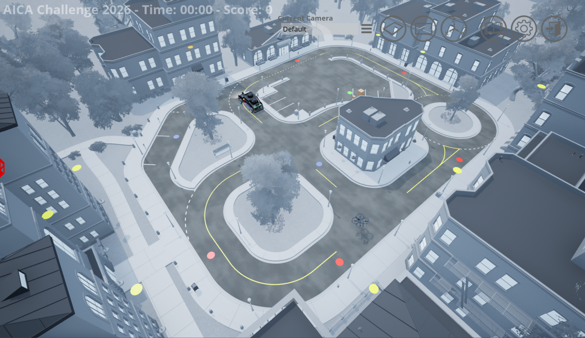
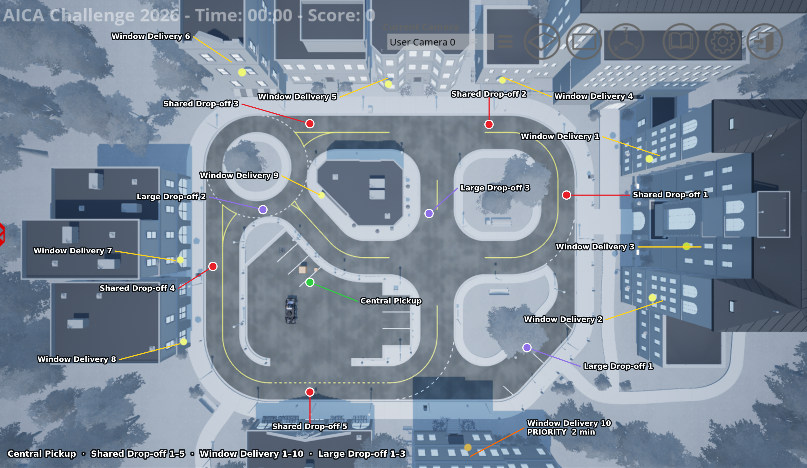
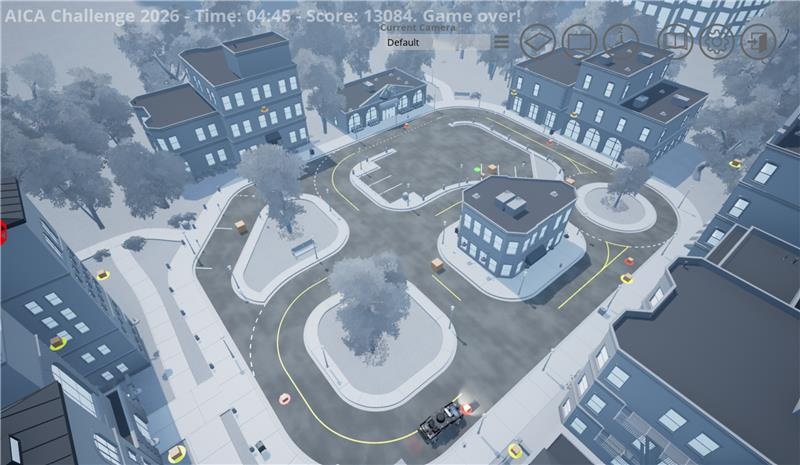

On-Site Finals Detailed Scenario
This page provides details of the onsite finals scenario that simulates a multimodal autonomous delivery system in an urban environment.
Navigation
Scenario Summary
The On-Site Finals follow the Virtual Stage scenario, with more deliveries and buildings that take more than one package. Window deliveries pay a bonus that rises with height. One delivery window carries an additional priority bonus for early completion, representing an urgent delivery such as a medical emergency. The QCar2 is penalized for hitting the curb.
Success in this challenge requires developing effective delivery strategies and implementing efficient path-planning and control algorithms.

Figure 1: Overview of On-Site Finals cityscape scenario map
Scenario Setup
Delivery Information
- The scenario includes 14 delivery tasks: 11 small-package deliveries and 3 large-package deliveries.
- All packages are initially located at the central pickup location.
- Two delivery options are available: shared drop-off and window delivery.
- One out of 11 small-package deliveries is an urgent delivery. Its window pad is marked by orange pad. It pays an additional bonus if served within the first 2 minutes of the run.
On-Site Finals Files
-
The files for the On-Site Finals have been added to the GitHub repository. The new files are:
- game_finals
- setup_env_finals
- plot_trace
- drivable_grid.npz
- run_finals
Pickup and Delivery Locations will update this image

Figure 2: Central pickup and delivery locations for the On-Site Finals scenario.
Tables 1 list the pickup and delivery locations.
Delivery Location Table
| Location | Package Type | Number of Packages |
Shared Drop-Off Location [x y z] |
Python Node |
Matlab Node |
Window Delivery Location [x y z] (bonus) |
|---|---|---|---|---|---|---|
| Central pickup | Pickup | - | [-2.50305 29.6703 0.05] | 24 | 25 | None |
| Building 1 | Small | 3 | [11.2739 -10.84655 0.05] | 2 | 3 | Window 1 — [15.1739 -18.04655 9.65] (400) Window 2 — [-3.492 -18.441 9.663] (400) Window 3 — [3.475 -21.886 11.291] (400) |
| Building 2 | Small | 1 | [22.435 1.392 0.005] | 4 | 5 | Window 4 — [27.787 0.358 4.291] (200) |
| Building 3 | Small | 2 | [22.5478 29.6703 0.05] | 14 | 15 | Window 5 — [25.401 17.005 9.15] (300) Window 6 — [25.32 35.156 13.321] (400) |
| Building 4 | Small | 2 | [0.0 44.9735 0.05] | 20 | 21 | Window 7 — [1.3 47.5985 4.807] (100) Window 8 — [-10.8 47.34 4.357] (100) |
| Building 5 | Small | 1 | [-19.84125 29.6703 0.05] | 22 | 23 | None |
| Building 6 | Small | 1 | None | - | - | Window 9 — [10.804 27.047 4.265] (200) |
| Building 7 | Small | 1 | None | - | - | Window 10 — [-23.873 6.209 9.15] (300) — urgent delivery |
| Curbside 1 | Large | 1 | [-12.8205 -4.5991 0.05] | 10 | 11 | None |
| Curbside 2 | Large | 1 | [8.975 37.099 0.005] | 16 | 17 | None |
| Curbside 3 | Large | 1 | [8.367 10.853 0.005] | 6 | 7 | None |
Table 1: Pickup, shared drop-off and window delivery locations.

Figure 3: Road network with node numbering in Python.

Figure 4: Road network with node numbering in MATLAB/Simulink.
Scenario Rules
On-Site scenario rules follow the Virtual Stage scenario rules. The additions are summarized here.
- When a pad becomes occupied, a box appears on it. An occupied pad accepts no further deliveries.
- A window delivery occupies that window pad immediately.
- A shared drop-off does not occupy the shared drop-off pad while the building still has deliveries outstanding.
- Once a building's final delivery is made, all of its window pads and its shared drop-off pad become occupied, indicating that no further deliveries to that building are possible.
- After 5 minutes, pads become occupied according to the number of deliveries completed.

Figure 5: All Deliveries Completed
Back to: